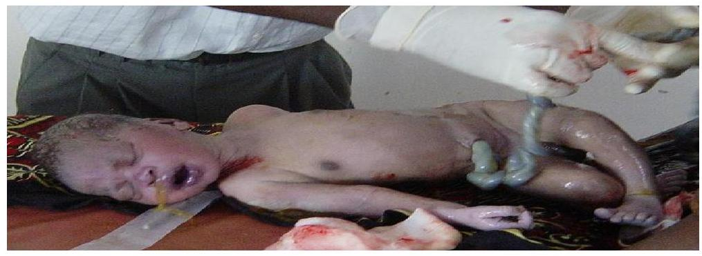
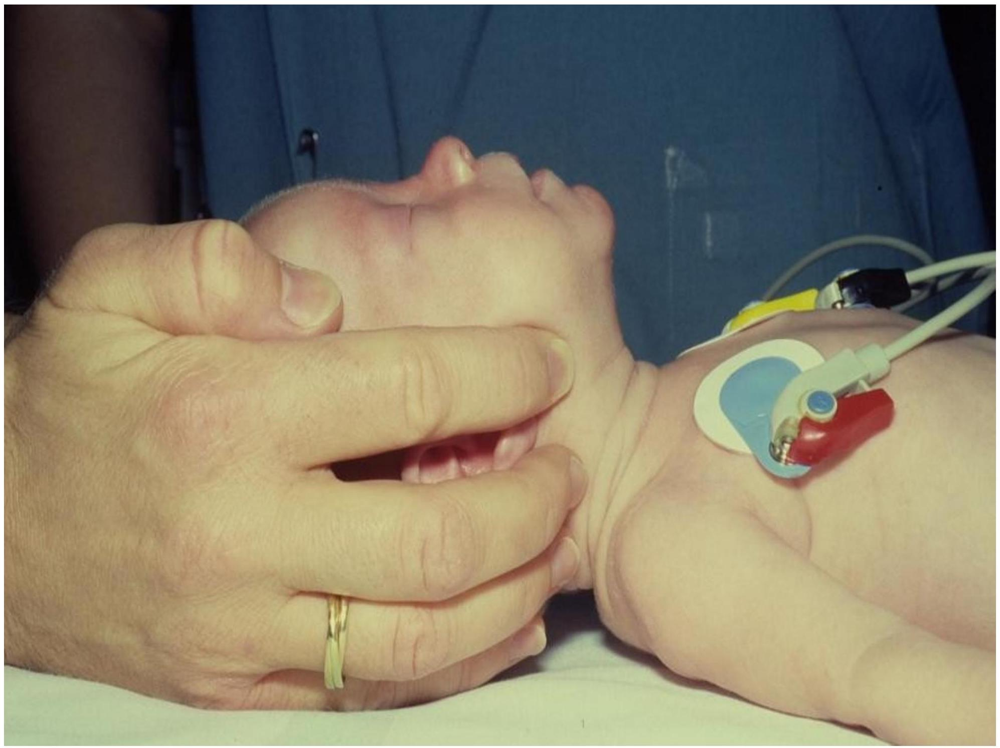
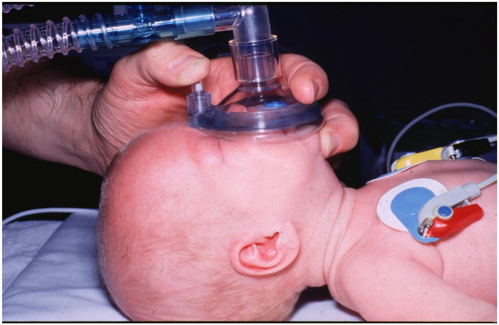
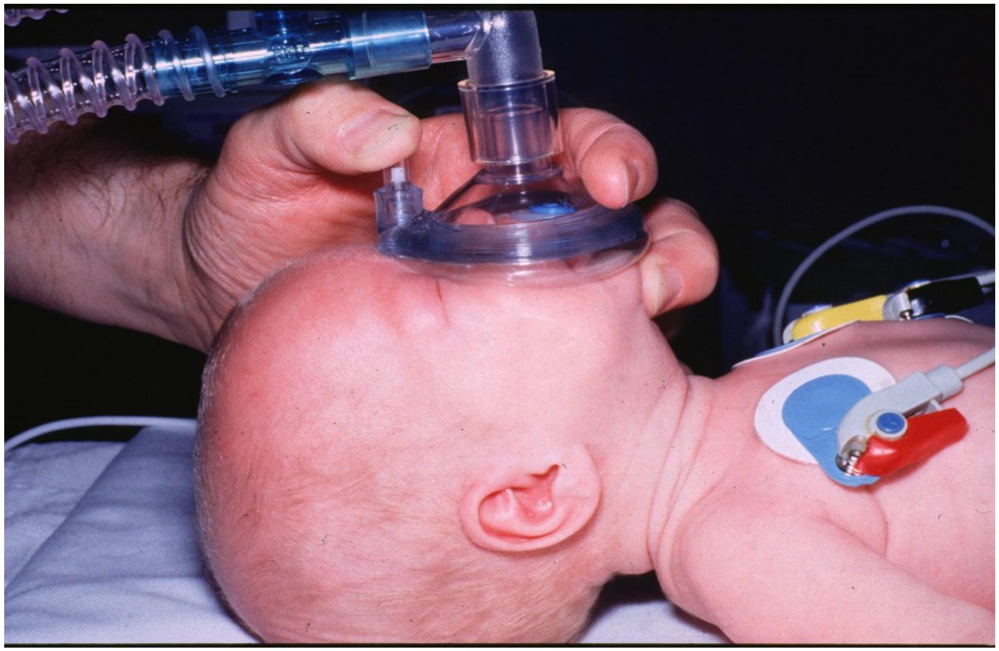
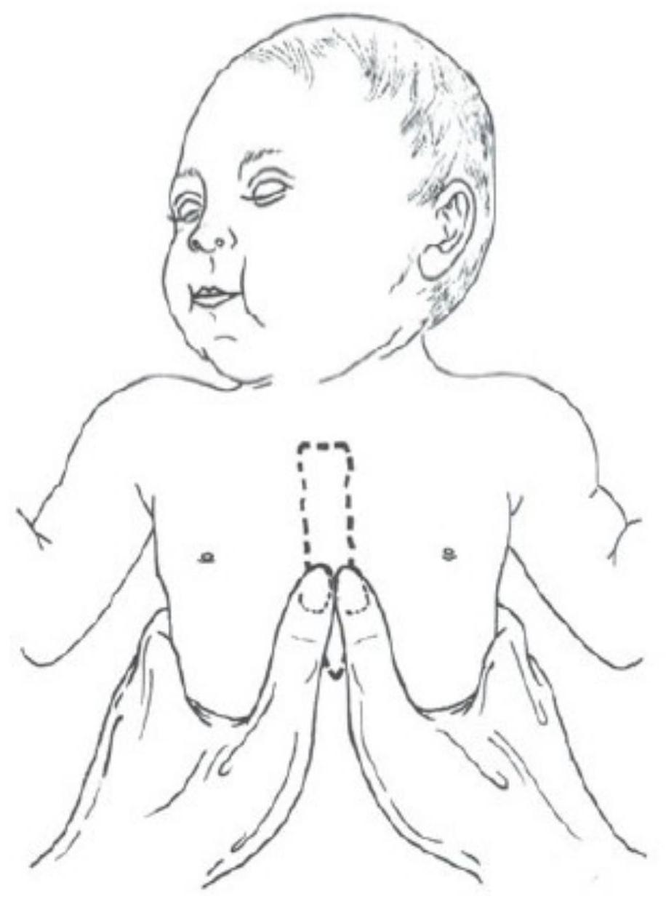

NEONATAL RESUSCITATION (ESSENTIAL NEW BORN CARE)
Most newborns require only simple supportive care at and after delivery.
- Dry the infant with a clean towel.
- Observe the infant while drying (see Chart)
- Maintain the infant in skin-to-skin contact position with the mother.
- Cover the infant to prevent heat loss.
- Clamp and cut the cord at least 1 min after birth.
- Encourage the mother to initiate breastfeeding within the first hour.
Skin-to-skin contact and early breastfeeding are the best ways to keep an infant warm and prevent hypoglycaemia. Term and low-birth-weight neonates weighing >1200 g who do not have complications and are clinically stable should be put in skin-to-skin contact with the mother soon after birth after they have been dried thoroughly to prevent hypothermia.
Resuscitation may be required for some infants, such as those born to mothers with chronic illness, to mothers who had a previous fetal or neonatal death, to mothers with pre-eclampsia, in multiple pregnancies, in preterm delivery, in abnormal presentation of the fetus, infants with a prolapsed cord, or after prolonged labour, rupture of membranes or meconium-stained liquor
For many infants, resuscitation cannot be anticipated before delivery. therefore:
- be prepared for resuscitation at every delivery, follow the assessment steps of chart
Why do babies need resuscitation - what is the main problem?
- Before we begin resuscitation however we must make sure the environment is appropriate.
- Babies are born covered with fluid and have a big surface are to volume ratio, they will lose heat rapidly from evaporation of this fluid, from loss of heat to the air (convection) and loss of heat to cold surfaces (conduction).
- If a baby gets cold this;
- Turns off surfactant production - the lubricant that allows the lungs to open and take in air after 9 months filled with fluid
- Increases its need for glucose as an energy source to make heat and so can help make a baby hvpoglvcaemic.
Equipment
- Clock
- Warm dry towels
- Firm stable surface & Lighting
- Bag Valve device (not damaged)
- Face masks
- Wide bore sucker
- (Guedel airways)
- (Oxygen)
- Laryngoscope
- ET tubes (sizes 2.0 to 4.0)
- Drugs
- Adrenaline
- (Volume)
- Scissors and tape
Resuscitation Steps
Resuscitation - Step 1
- (Equipment routinely checked and working)
- (Define tasks - resuscitation nurse / who is in charge to provide an effective team)
The first two bullet points are in brackets because they are an essential part of all resuscitation events but need to be thought about before the need for resuscitation arises.
- Equipment for resuscitation must always be ready - routines for checking things on each shift must be in place.
- Ideally highly skilled providers would be available - use them - if people are resuscitating together it is very important that one person is in charge and directing the overall approach.
- The first priority therefore after the cord is cut is to dry the baby, wrap it in clean, dry towels and move it to a place where it can be kept warm while any further resuscitation is commenced.
- What do people think about hanging the baby upside down to 'let the fluid in the lungs drain out', or slapping the baby's bottom to stimulate it to cry?
- Hanging upside down achieves nothing in terms of clearing fluid - fluid is squeezed out of the chest during delivery and reabsorbed once the lungs have been expanded by the first few breaths. There is also a danger to the hips from hanging a baby with poor muscular tone upside down.
- The best way to stimulate the baby is the action of drying it with a towel - if it does not respond to this then slapping the bottom or pinching the feet will achieve nothing
Resuscitation - Step 2 - Airway

- After drying and placing in a warm place then resuscitation proceeds with 'A' for airway.
- If after drying and keeping warm the baby is now crying then the airway must be open and the baby must be breathing! It is appropriate to quickly check the heart rate, colour and tone but in 99% of cases the crying baby will be fine and can be passed immediately to the mother - the best place to keep the baby warm is in skin to skin contact on the mothers chest.
- If the baby is not crying, looks blue or white or is floppy then we need to deal with the 'A' for airway - even if the heart rate is 40!
- If there has been thick meconium it makes sense to suction the mouth and pharynx as far as you can see - with a large bore suction tube or Yankauer sucker. It makes no sense to try sucking meconium with an 8 F or 10 F tube.
- Passing the suction tube blindly down into the pharynx should not be done - this may worsen bradycardia (through vagal nerve stimulation).
- If there is no history of thick meconium then routine suction is not necessary - suction tubes are a great way of spreading infection.
- The priority now is to open the airway - this requires adequate positioning (see next slides)
- After opening the airway has there been any effect - look, listen and feel for breath sounds
Airway opening 1

- In the slide a normal term baby is lying on a flat surface.
- Because the back of a baby's head is large the natural position for a baby placed on such a hard surface is with the head flexed (tilted forwards with the chin on the chest).
- This flexed position is a very good way of closing the airway.
Airway opening 2
- To open the airway we must do something about the position - moving it into what is called the 'neutral position' with the nostrils and lips making a line that is parallel to the line of the surface the baby is lying on.
- In the picture the position is being achieved by lifting the jaw from the angle of the mandible and extending the neck a little (the jaw thrust). In most cases the head-tilt / chin lift approach is used (this is harder to show in a photo). Do not hyper-extend the neck so the jaw points to the ceiling - in babies this also blocks the airway.
Resuscitation - Step 3 - Breathing
If the baby after positioning the airway begins to breath well - the chest is obviously expanding - then give oxygen and check the heart rate.
If the baby does not breathe after opening the airway by now 60-90 seconds will have elapsed from the time of birth. It is therefore sensible to give 5 slow inflation breaths.
Alveoli before and after successful inflation
 

- It is critical when assisting a baby to breath with a bag and mask that the airway position is maintained - if it is not then you cannot inflate the lungs.
- It is also critical that the mask fits correctly - it should cover mouth and nose and not press on the eyes. A see through mask is ideal as it allows you to see the colour of the baby.
- The most common problem with masks (other than wrong sizes) is that the air-filled cushion around the edge is punctured. If this happens it is impossible to get a good seal - BUY A NEW MASK!
Right size and position of mask


- After delivering 5 inflation breaths the heart rate should be checked for 5-10 seconds.
- The best places to check are the umbilical stump or to listen with a stethoscope (the latter is actually preferred as the cord pulsation is on occasions unreliable....but is better than trying to feel a brachial or femoral in a newborn).
- If the heart rate seems above 60 (1 beat per second) then continue with BVM ventilation for 30s at a rate of about 30 and then re-assess the baby's airway and breathing AND heart rate.
- If the chest has been rising then in most cases the baby will being to breathe AND the heart rate will be fast.
Resuscitation - Step 4 - Circulation
If after providing 5 inflation breaths the heart rate is found to be <60 bpm or absent then chest compressions will be needed. NOTE the ratio of compressions to breaths is 3:1 in the newborn. If you need to give compressions YOU MUST call for help.
- Compress over sternum
- 1 finger-breadth below nipple line
- Two fingers if solo resuscitation
- Thumbs if 2 or more people
- 1/3rd the depth of the chest
- If there are two people then the 'two-thumbs' approach can be used. If you are alone then you put two fingers on the lower sternum 1 finger breadth below the line connecting the nipples.
- The aim is to compress the chest to about 1/3rd its depth - the sternum should move about 1.5 cm downwards when you press.
- Press and release - the real effect of compressions is to move blood into the lungs and then into the coronary arteries - like a syphon pump. You are really not pumping blood around the body by compressing the heart.
- If you have started compressions for a slow heart rate then continue with 3 compressions to 1 breath for about 10 cycles - this should achieve about 30 breaths and 90 compressions in 1 minute.
- At the end of about 10 cycles stop and reassess A, B and C together.
- Manage the airway, breathing and circulation as required.
- As soon as the heart rate is above 60bpm then compressions can be stopped.

Special Considerations
Meconium
- In studies of >2500 babies born through meconium stained liquor routine suction 'on the perineum' was of NO BENEFIT.
- In studies on > 2800 babies born through meconium stained liquor who were vigorous (crying) routine deep suction was of NO BENEFIT and possibly harmful.
- In a FLOPPY baby born through meconium suck the lower airway IF you are experienced at intubation
- A lot of fuss is made about meconium at deliveries.
- It has recently been pretty conclusively demonstrated that trying to suck out meconium from the mouth and nose before the chest has been delviered (ie on the perineum) is not effective (ie a waste of time) (see Vain, 2004)
- Some people also like to try and intubate babies born through meconium to suck meconium out from the cords and trachea, or the try and pass a suction tube through the cords under direct vision with a laryngoscope. This has been shown to be of no benefit in babies who are crying and active. In fact it may be harmful by causing vigorous stimulation of the vagus nerve and bradycardia and apnoea.(see Halliday, 2001)
- Therefore when there is meconium - even if it is thick - and the baby is crying sucking out the airway is only of value if there appears to be airway obstruction gurgling, choking, crackly breathing or visible meconium. Then ONLY suck the oropharynx not the trachea.
- If the baby is floppy and apnoeic then it is sensible to such the mouth and visible pharynx. Only someone who knows how to intubate should attempt to suck the cords / trachea.
- The baby will die from lack of oxygen and not meconium poisoning! Spending a great deal of time on suction does not help.
Oxygen
- In studies of over 1000 infants B+M ventilation with AIR has proven just as effective as with oxygen.
- About 1/4 of resuscitated babies go on to need oxygen for some time.
- Priority is ventilation - do not stop resuscitation to look for oxygen.
- What do you do if there is no oxygen to resuscitate with?
- It is now accepted that immediate resuscitation with AIR is just as effective as resuscitation with oxygen and may even be beneficial
- The benefit may relate to less free radical damage promoted by hyperoxia.
- About 25% of babies may eventually require oxygen but the priority is ventilation - there is no point running around for oxygen if no-one is resuscitating the baby.
Drugs?
- 99% of babies who can be saved will be saved by Airway and Breathing support.
- In a baby who is not breathing or who is blue / white and floppy:
- Adrenaline, 1 in 10,000 can be used
- UVC glucose is rarely necessary in the first 10 minutes and is ONLY given if there are 2-3 people.
- There is no evidence of benefit for routine NaHCO3
- So far we have not talked about drugs - that is because they are an extremely low priority in newborn resuscitation. Of babies that can be saved 99% will be saved by effective management of A, B and C.
- There is no urgency to give glucose in the first few minutes of resuscitation. Babies lack oxygen delivery this is the priority.
- If a baby is floppy and requiring bag and mask ventilation then this is the priority - it cannot be stopped to prepare glucose for injection. SO glucose can only be considered if two people are present, one to continue ventilating one for drugs - this goes for any drug. Adrenaline is useless if there is no breathing and no chest compressions.
- The other favourite drug for newborn resuscitation is sodium bicarbonate. There is no evidence of benefit for this drug in treating asphyxia (see Kesckes, 2001 and bicarbonate summary). In fact rapid high concentration bicarbonate bolus dosing has been associated with an increased rate of intra-ventricular haemorrhage in preterm babies
Resuscitation (SUMMARY)
- Dry / stimulate and keep warm
- A - Open airway (suction if floppy and meconium)
- Check for response (look, listen, feel)
- B -Bag and mask - 5 inflation breaths to make the chest move
- C - Chest compressions, 3:1 with breaths.
- Correct management of Airway and Breathing will save most babies.
- A single resuscitator must concentrate on A+B and not worry about:
- Lack of oxygen
- Giving drugs
- Make sure the chest moves!